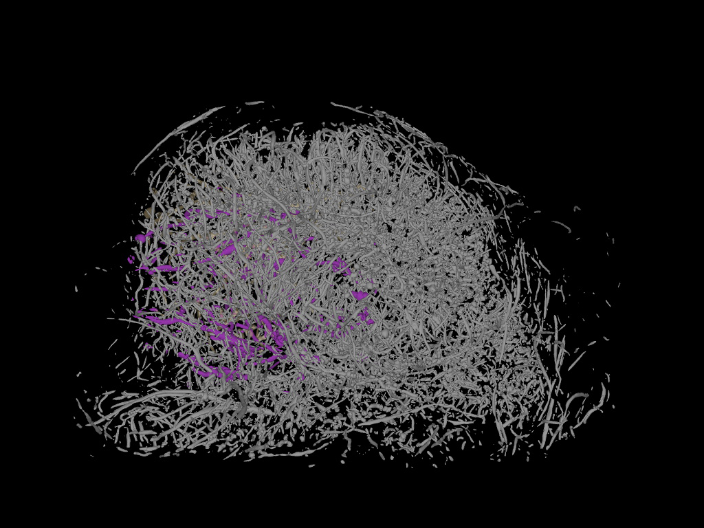

Example 1: Foot
Example 1: Foot
Data: tiffstack-foot.zip (image stack, 5MB)
Example 2: Arteries in the brain
node
Data courtesy David G Barnes & Parnesh Raniga
BodyParts3D Online database and Japan's National Bioscience Database Centre
Data: data/example/heart-bp3.0.zip (image stack, 5MB)

Example 4: Arteries in the developing sheep
Data courtesy Michael Eager, James Pearson and David Walker (Ritchie Lab/Hudson Institute)
Local upload
You can upload volumetric data from you computer and view it with WebGL or on the CAVE2
Using DaRIS
Select datasets from DaRIS. You can view each dataset directly with WebGL or view all on the CAVE2
Tag
You can check and review volumes with a tag number. If you want to view the volumes on the CAVE, please write down and bring it with you
Change and save display settings
You can save your preferred display settings by clicking the "save" button on the web viewer